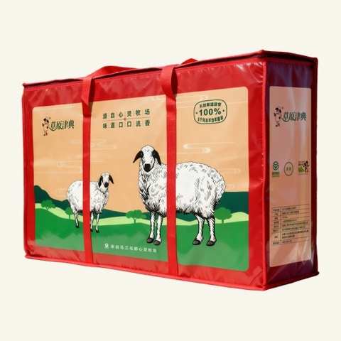
礼盒系列
豪华礼盒
礼盒外观展示
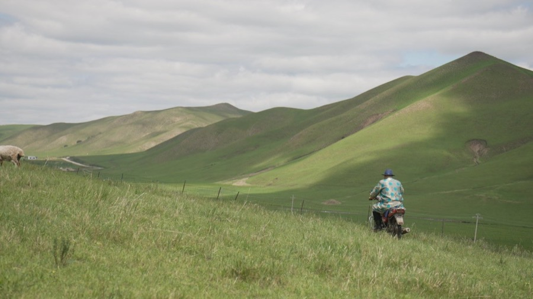
来自乌兰毛都杭盖草原
一份有来处的草原好礼
礼盒以鎏金为主色，将乌兰毛都的河流、羊群与毡房绘入盒面；硬挺箱体配合手提结构，兼顾携带、防护与赠礼陈列。
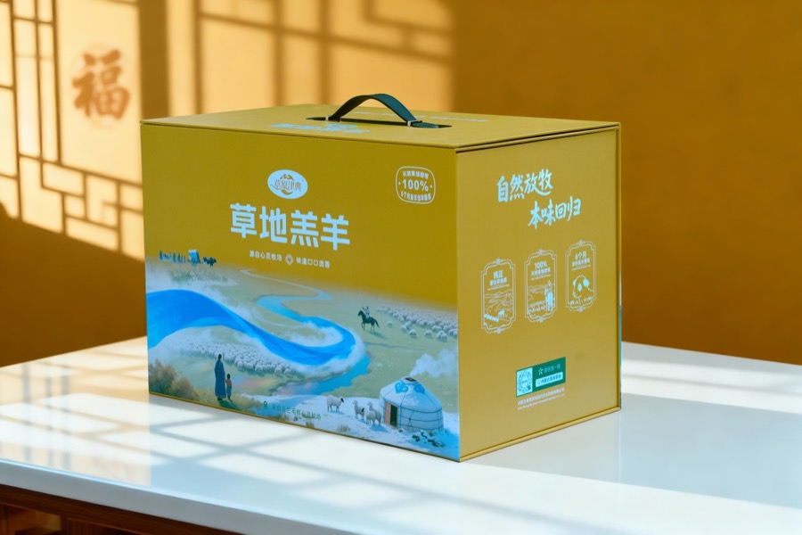
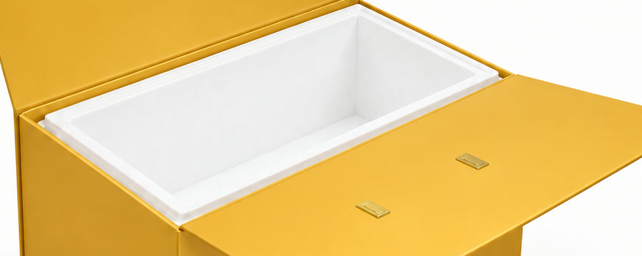
内胆兼顾隔温与缓冲，降低运输途中温度波动和碰撞带来的影响。
外盒为实物摄影；内胆为本地包装结构示意 · 轻触图片查看
内蒙古 · 兴安盟 · 科右前旗
乌兰毛都杭盖草原
从本地实拍看见花草、水源与羊群生长，也看见留在草原日常里的风土印记。自然放牧，是环境、羊群与生活方式共同形成的日常。
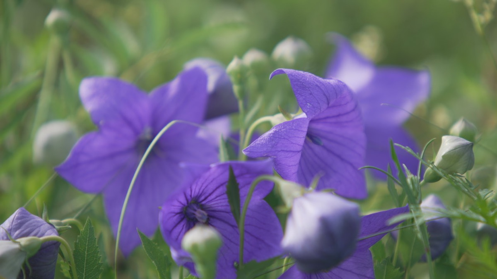
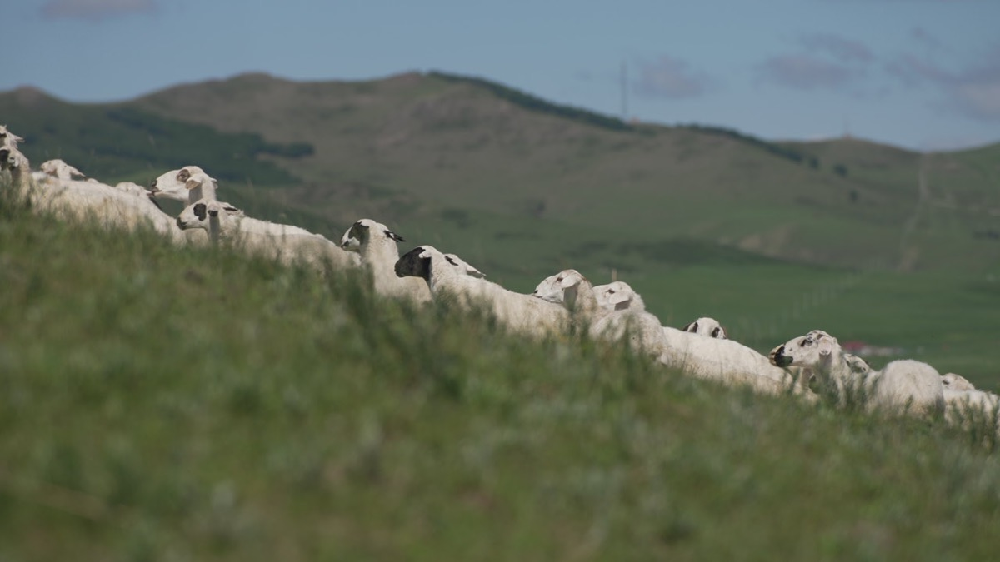
草木、水源、羊群与风土印记，均为乌兰毛都本地实拍。
黑头大尾草地羊属蒙古羊血统，经长期自然与人工选择形成地方良种。血统与选择共同保留下来的耐寒、结实和适应性，进一步表现为生长发育较快、出肉率较高，以及细嫩、肉味浓郁、膻味较轻的肉质特点。
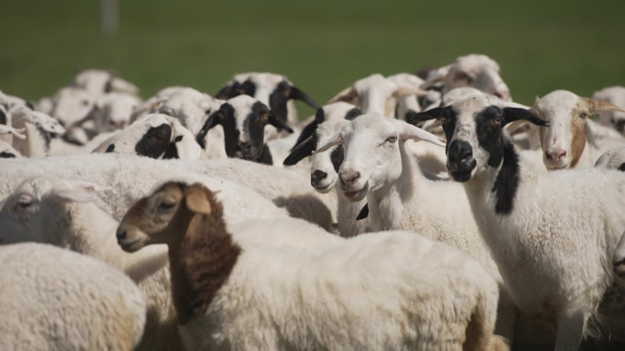
深浅头色与浅色被毛构成直观辨识；结实丰满的体格，则来自地方品种长期稳定下来的体态特征。
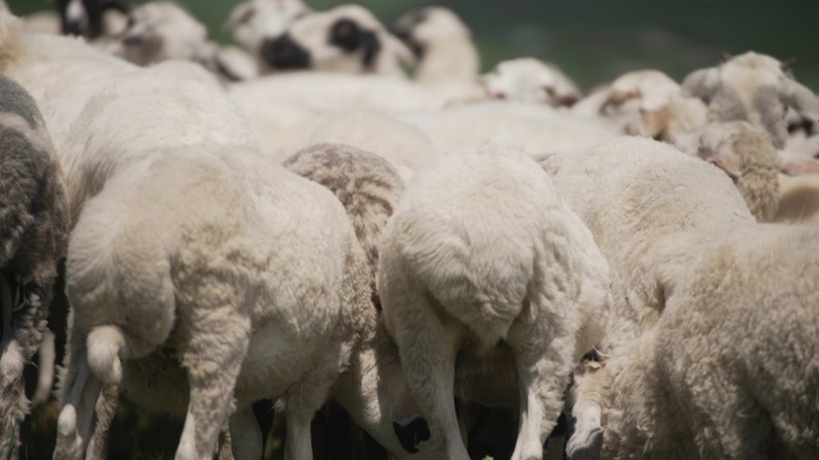
尾部集中储存脂肪，可在饲草阶段性不足时提供能量；配合蒙古羊耐寒、适应性强的特点，帮助羊群面对草原寒冷与季节变化。
羊群实拍 · 个体毛色和体态存在自然差异
从羊排、前后腿到脊骨与羊尾，以真实部位组成一套半羊配置；一份覆盖煎、烤、涮、炖等多种家庭吃法。
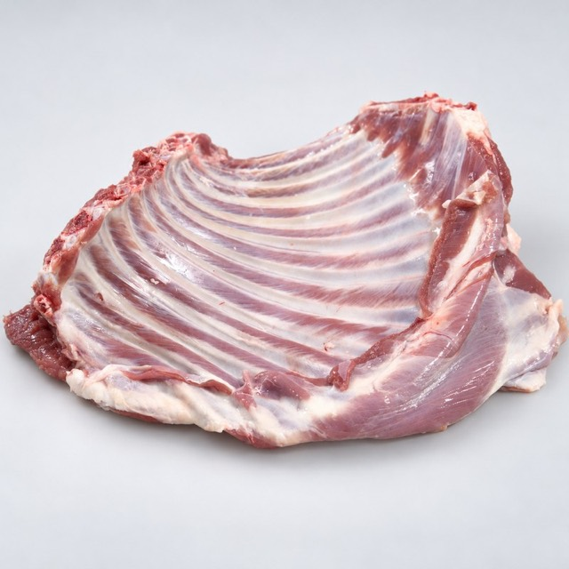
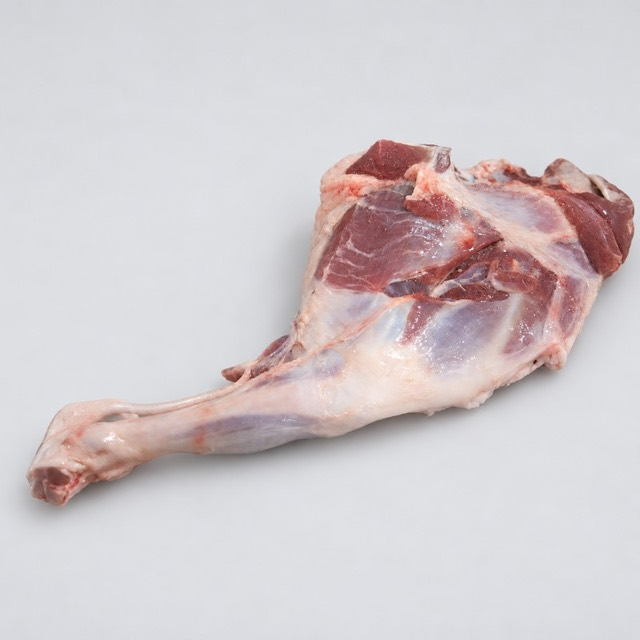
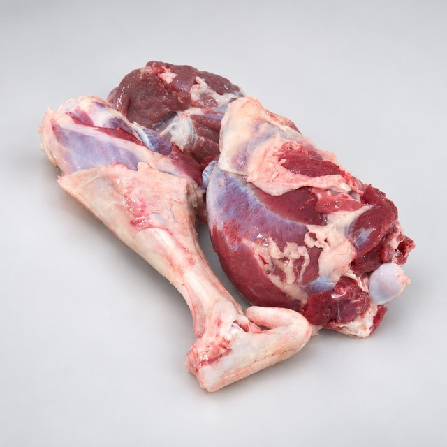
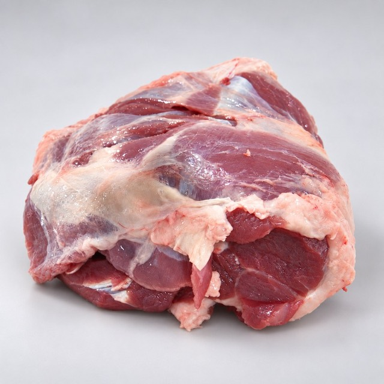
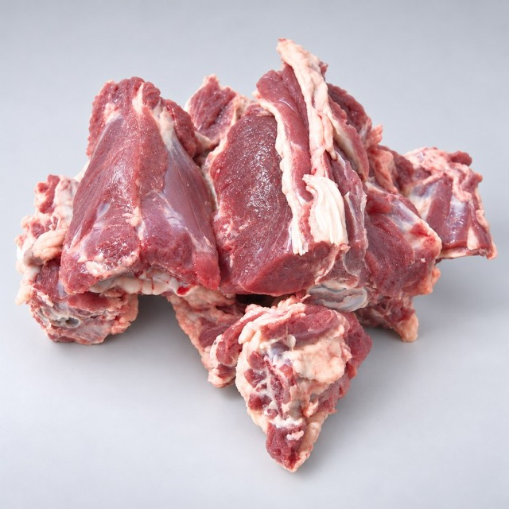
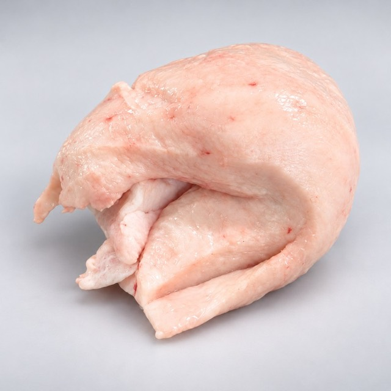
部位展示示意，图片非实物等比例；实际外观与规格以产品标签和实物为准。
四类随盒物品，不计入羊肉净含量。
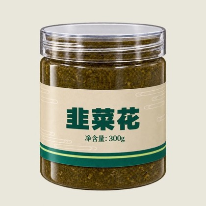
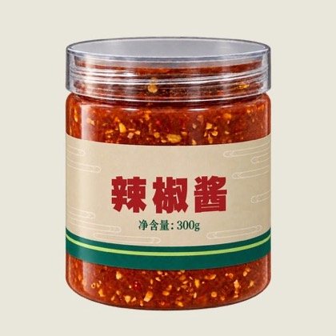
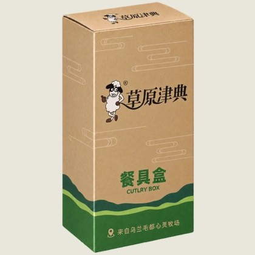
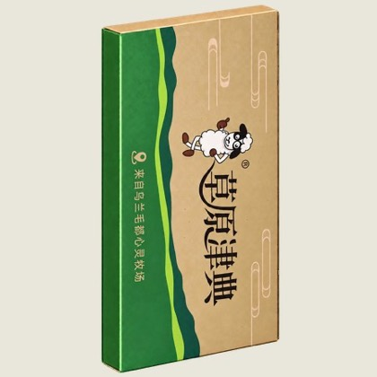
随盒物品展示示意；盒内构成与标签信息以实际交付为准。
把想要的数量与赠礼安排，先记在意向单里。
当前可预览意向单，暂未开放在线提交。
从礼盒到鲜切，品牌持续探索羊肉的不同产品形态。本栏为过往产品与产品方向展示，不代表实时在售。

礼盒外观展示
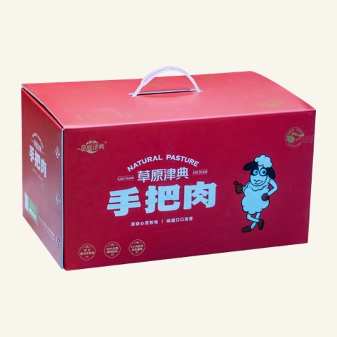
红色手提包装
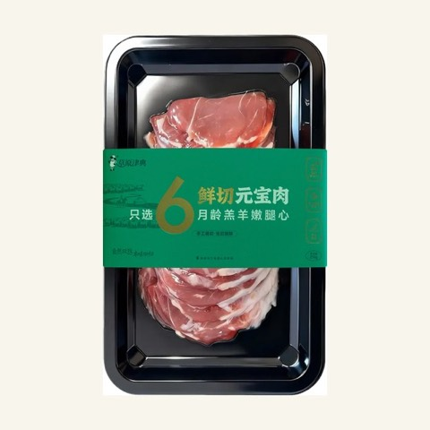
托盒包装